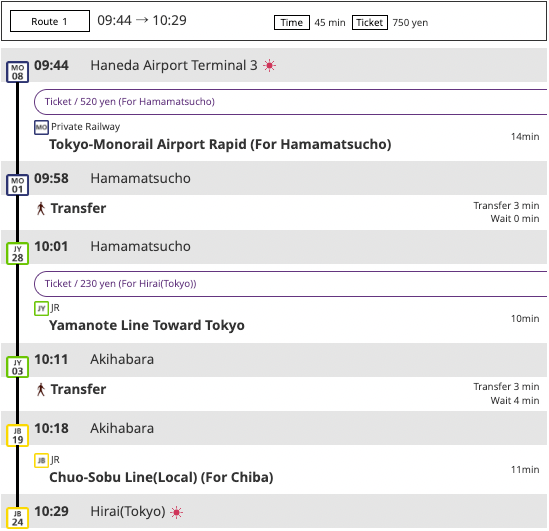
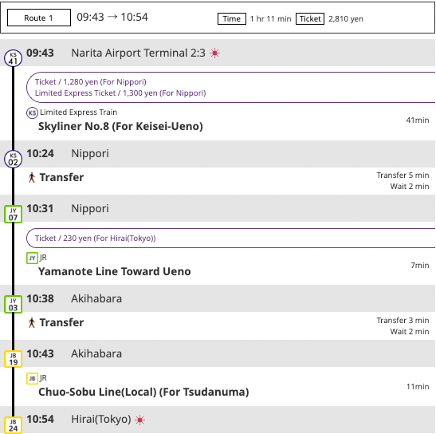

Guide from Haneda & Narita Airports 羽田空港＆成田空港からのご案内 从羽田与成田机场的到达指南 하네다·나리타 공항에서의 이동 안내 Conseils d’accès depuis Haneda et Narita Guía desde Haneda y Narita
【Haneda Airport】
【羽田空港】
【羽田机场】
【하네다 공항】
【Aéroport de Haneda】
【Aeropuerto de Haneda】
The route with the shortest travel time is shown below.
羽田空港からの最短の乗りかえは以下の通りです。
最短时间路线如下所示。
소요 시간이 가장 짧은 경로는 아래와 같습니다.
L’itinéraire le plus rapide est indiqué ci‑dessous.
La ruta con menor tiempo de viaje se muestra a continuación.

Other routes can be found at the following website.
その他のルートは下記サイトにてご確認ください。
其他路线可在以下网站查询。
다른 경로는 아래 웹사이트에서 확인할 수 있습니다.
D’autres itinéraires sont disponibles sur le site suivant.
Otras rutas pueden consultarse en el siguiente sitio web.
https://world.jorudan.co.jp/mln/en/?sub_lang=nosub
【Narita Airport】
【成田空港】
【成田机场】
【나리타 공항】
【Aéroport de Narita】
【Aeropuerto de Narita】
The route with the shortest transit time is shown below.
成田空港からの最短の乗りかえは以下の通りです。
最短换乘时间的路线如下所示。
가장 짧은 환승 경로는 아래와 같습니다.
L’itinéraire avec le moins de correspondances est indiqué ci‑dessous.
La ruta con el menor tiempo de transbordo se muestra a continuación.

This is a transfer guide for passengers using Narita Airport Terminals 2 and 3.
If you are using Terminal 1, the nearest station is different. Please select Terminal 1 from the link below and search again.
And other routes can be found at the following website.
成田空港第2・第3ターミナルをご利用のお客様向けの乗換案内です。
第1ターミナルをご利用の方は、ターミナルからの最寄り駅が異なりますので、下記リンクより第1ターミナルをご指定の上、再度検索してください。
また、その他のルートは下記サイトにてご確認いただけます。
本指南适用于成田机场第2/第3航站楼的旅客。
如使用第1航站楼，最近的车站不同，请通过下方链接选择第1航站楼后重新查询。
其他路线也可在以下网站查询。
본 안내는 나리타 공항 제2, 제3 터미널 이용객을 위한 환승 안내입니다.
제1 터미널 이용 시 가장 가까운 역이 다르니, 아래 링크에서 제1 터미널을 선택하여 다시 검색해 주세요.
기타 경로는 아래 웹사이트에서 확인할 수 있습니다.
Ce guide de correspondances s’adresse aux passagers des terminaux 2 et 3 de l’aéroport de Narita.
Si vous utilisez le terminal 1, la gare la plus proche diffère. Veuillez sélectionner le terminal 1 via le lien ci‑dessous puis relancer la recherche.
D’autres itinéraires sont disponibles sur le site suivant.
Esta guía de transbordos es para los pasajeros de los terminales 2 y 3 del aeropuerto de Narita.
Si usas el Terminal 1, la estación más cercana es diferente. Selecciona el Terminal 1 en el enlace de abajo y vuelve a buscar.
Otras rutas pueden consultarse en el sitio siguiente.
https://world.jorudan.co.jp/mln/en/?sub_lang=nosub
https://www.jorudan.co.jp/